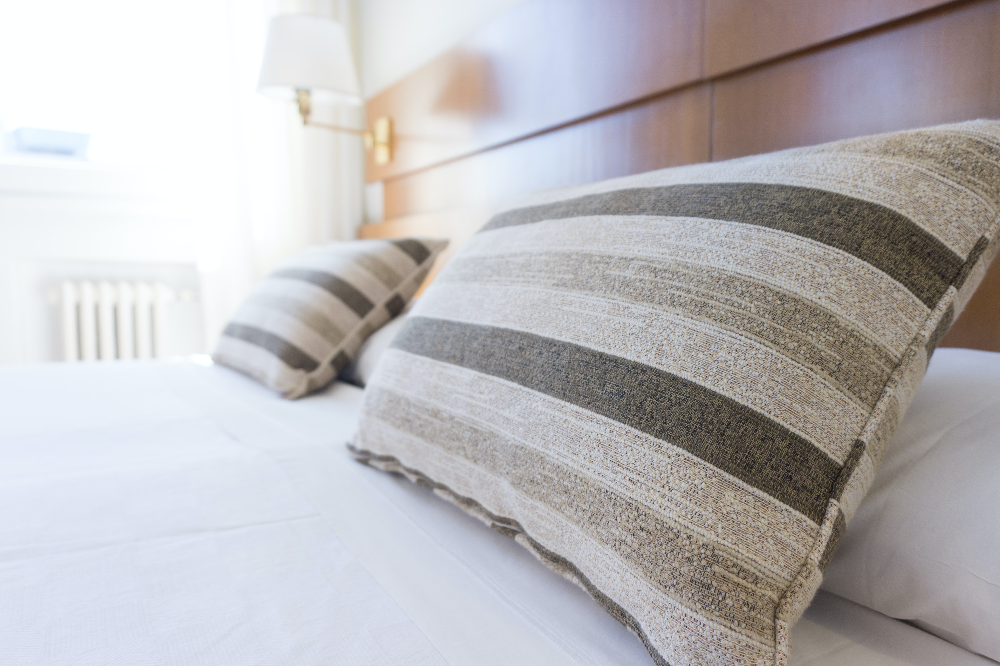
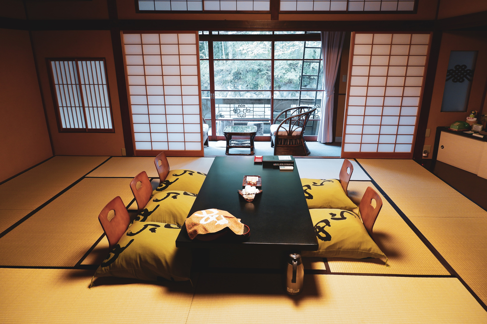

Lodging - Hotels

If you prefer to stay in a typical western-style hotel, it may be a good idea to start looking at options inside the
airport. It is good to keep in mind, however, that this tends to be more expensive than other lodging options.
Staying at a hotel airport removes the worry of not making your return flight home in time because you are too far away.
There is also a possibility that the hotel has a deal with the restaurants inside the airport. For example, Osaka International
Airport has its own hotel that offers guests a meal ticket to be used at a nearby restaurant for breakfast. The hotel may be
smaller than one would expect, but it is perfect for short-term stays. There are over 1,000 and 2,000 hotels in Osaka and Tokyo, respectively.
Capsule Hotels
There are plenty of Western-style hotels available, but have you heard of Japan's most unique lodging space?
Perhaps one of the most well-known and peculiar places to stay in Japan are capsule hotels. These are very small rooms made to
fit one person. Guests are provided with a bed, shared bathroom/shower, food, and other amenities during their stay.
Guests will also have access to lockers for their belongings. This is the
perfect option if you are traveling alone and want to save money; however, it may not be a great idea if you have claustrophobia.

The amount of space in your room and the types of amenities you have will depend on the hotel. However, you will be put in a shared
area with other capsules and may be required to use a short ladder to get to your own capsule. There are gender-based capsule hotels
available as well. If you decide to stay in this type of hotel, be sure to stay mindful of other guests.
Ryokan
Another unique lodging experience offered by Japan is the ryokan, a traditional Japanese-style inn. They are more expensive
than a capsule hotel (≈$35 vs $100+ USD per night), but the price comes with its own benefits.
At a ryokan, guests stay in a traditional Japanese-style room with tatami mats and sliding doors.
Instead of beds, Japanese futons are provided for guests, along with a seating area, bathroom, and eve a yukata to wear during
their stay. You are not required to wear the yukata. Depending on the ryokan, guests may be able to even karaoke and bath houses
inside the ryokan. As for meals, guest are provided with breakfast and dinner for the duration of their stay.
Ryokan are perfect for those traveling in small groups, couples, or those who don't mind spending a bit more money.
